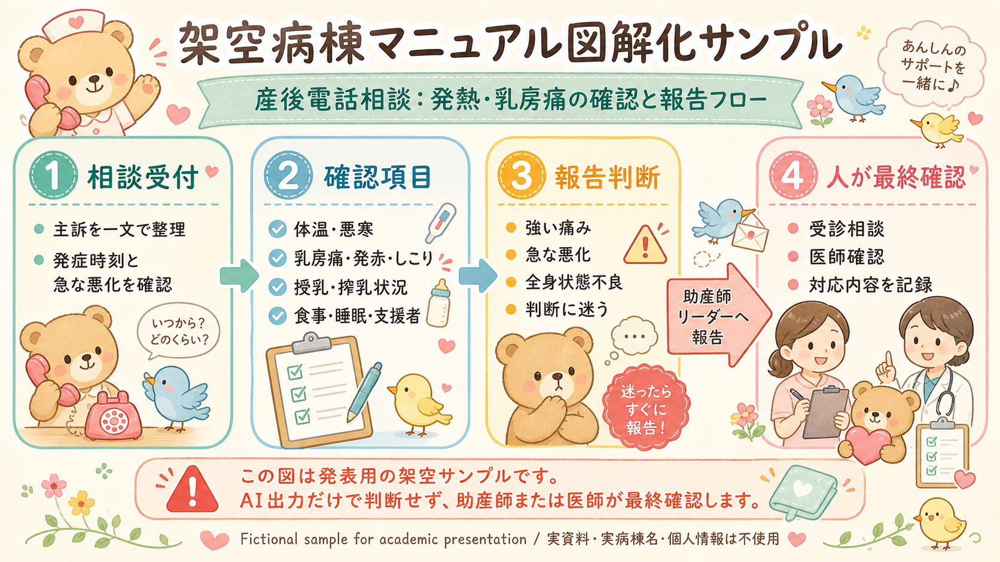
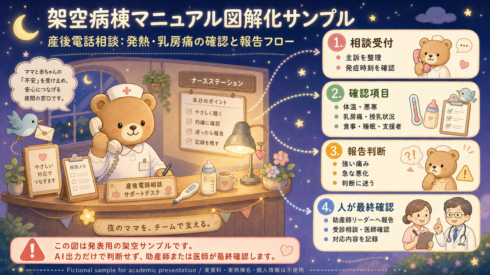
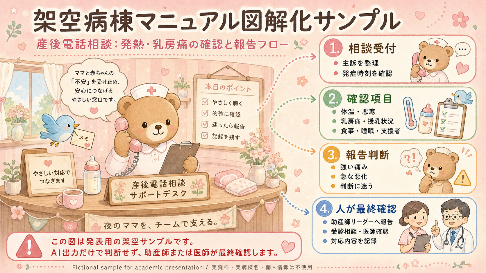
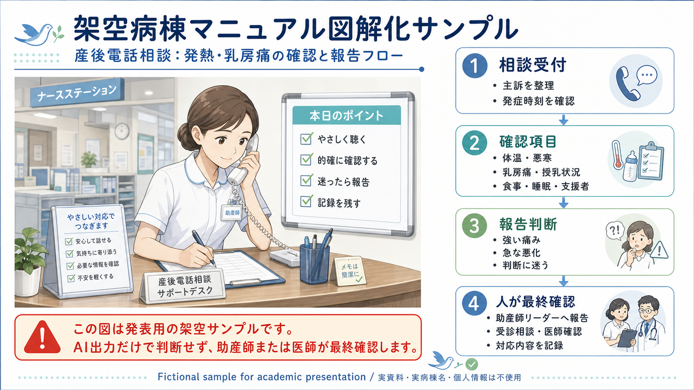

相談受付
主訴を一文で整理し、発症時刻、変化の経過、本人が一番困っている点を確認します。
Procedure Summary
文字だけの手順書を、受講者が「何を聞くか」「いつ報告するか」「誰が確認するか」まで追えるように分解します。
主訴を一文で整理し、発症時刻、変化の経過、本人が一番困っている点を確認します。
体温、悪寒、乳房痛、発赤、しこり、授乳状況、食事、睡眠、支援者の有無を確認します。
強い痛み、急な悪化、全身状態不良、判断に迷う場合は、リーダーへ早めに報告します。
受診相談や医師確認の要否、伝えた内容、記録に残す情報を人が確認します。
Design
同じ手順でも、配色やモチーフで印象が変わります。院内研修では、対象者や場面に合わせて、やわらかさと専門性のバランスを整えます。

相談対応の緊張感を下げ、初学者が流れをつかみやすい資料です。新人研修、ロールプレイ前の導入、説明会資料に向いています。

夜間の相談窓口を想定し、落ち着いた背景に手順をまとめた資料です。夜勤スタッフ向けの確認資料や小冊子に使えます。

ピンク系のやわらかい柄で、母子支援の雰囲気を残した資料です。判断点を見落とさないよう、手順と注意点を大きく整理します。

視認性と専門性を優先した資料です。報告のタイミング、確認項目、記録内容をそろえたい研修に向いています。
For Training
かわいい柄は印象づくりに有効ですが、スタッフ教育資料では判断基準と報告先が埋もれないことを優先します。
まずは相談の流れをつかみ、確認すべき項目を落とさないことを重視します。
「相談受付、確認項目、報告判断、人が最終確認」の4段階に固定すると、手順書の読み替えがしやすくなります。
対応後に、聞き取った内容、報告の判断、記録内容を確認しやすい形にします。
Contact
病棟手順書、研修資料、Q&A型参照ツールの試作について相談できます。